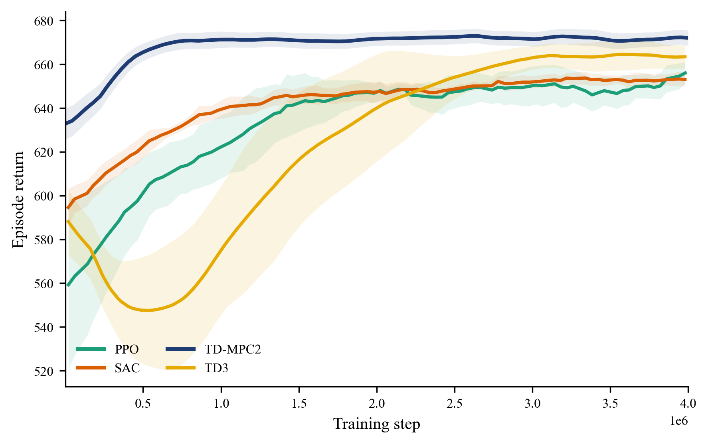
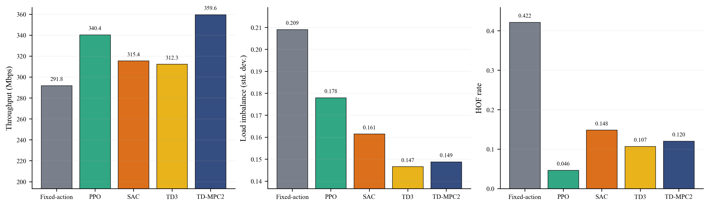
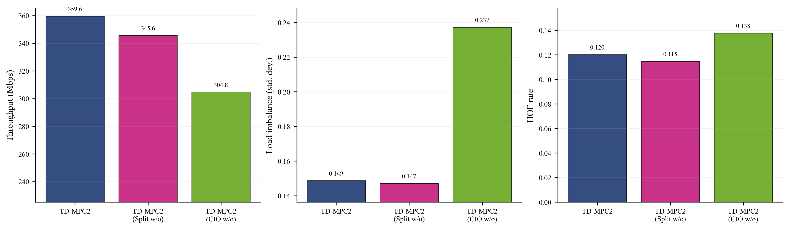
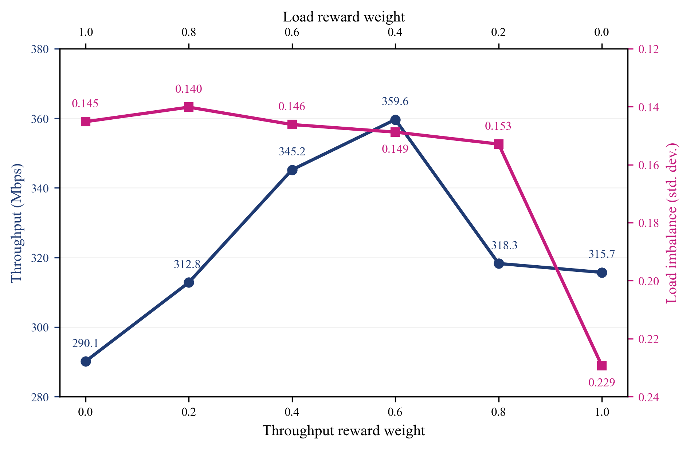
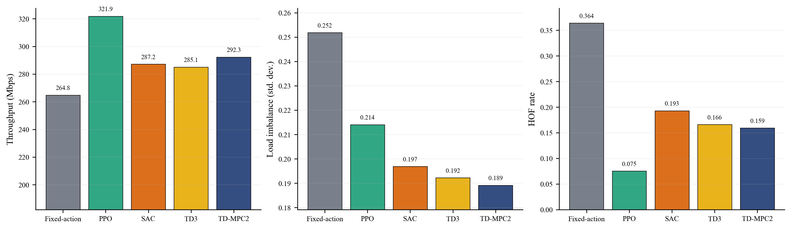

Chapters 5-6
실험 방법 및 결과
5.1 실험 방법
실험은 3GPP UMi Street-Canyon 기반의 다중 셀 환경에서 수행했으며, 5개 기지국과 60명의 사용자를 배치했다. 제안 기법은 Fixed-action, PPO, SAC, TD3와 비교해 학습 안정성과 제어 성능을 함께 확인했다.
| Category | Parameter | Value |
|---|---|---|
| Network | Deployment area | 800 m x 800 m |
| Inter-site distance (ISD) | 250 m | |
| Number of Base stations / Total Users | 5 / 60 | |
| Base station transmit power / Antenna gain | 33 dBm / 5 dBi | |
| Antenna configuration | 4 x 1 | |
| Channel | Carrier frequency / Bandwidth | 3.5 GHz / 100 MHz |
| Pathloss / Shadowing | TR 38.901 NLOS / 7.82 dB | |
| CSIT error factor | 0.1 | |
| Hysteresis / Time-to-Trigger | 3 dB / 320 ms | |
| Traffic | Mobility / Traffic model | Street-grid / Constant bit rate |
| Data rate per User | 8 Mbps | |
| User speed groups / Count | {0.5-1.5, 1.5-3.0, 4.0-8.0} m/s / 20 each |
| Category | Hyperparameter | Value |
|---|---|---|
| Learning | Batch size | 64 |
| Learning rate | 5.4041e-4 | |
| Discount factor | 0.99 | |
| Max gradient norm | 20 | |
| Architecture | Encoder dim / layers | 256 / 2 |
| Latent dim | 256 | |
| Value nets / dropout | 5 / 0.01 | |
| SimNorm dim | 8 | |
| Number of bins (HL-Gauss) | 101 | |
| Planning | Horizon | 5 |
| Iterations | 4 | |
| Samples | 256 | |
| Elites | 64 | |
| Objective | Consistency loss scale | 20 |
| Reward / Value loss scale | 0.1 / 0.1 |
5.2 실험 결과
5.2.1 시스템 성능 평가 및 비교 분석
제안 기법은 학습 수렴 속도와 최종 성능 모두에서 안정적인 결과를 보였고, 특히 처리량 향상뿐 아니라 부하 불균형과 핸드오버 실패율도 함께 줄이는 경향을 확인했다.


5.2.2 제안 기법의 효용성 분석
RSMA 분할 비율만 제어하거나 CIO만 제어하는 경우와 비교했을 때, 두 제어를 함께 사용하는 구성이 가장 균형 잡힌 성능을 보였다. 이는 전송 구조와 핸드오버 제어를 분리하지 않고 공동 최적화하는 접근이 중요하다는 점을 보여준다.
보상 가중치를 바꾼 실험에서도 처리량과 부하 분산 사이의 상충관계가 확인됐으며, 본 연구의 설정은 두 지표를 함께 고려하는 절충점으로 작동했다.


5.2.3 이질 트래픽 환경에서의 일반화 성능 평가
학습 환경과 다른 트래픽 조건에서도 제안 기법은 비교적 안정적인 성능을 유지했다. 이는 특정 시나리오에만 맞춰진 정책이 아니라, 환경 변화에도 대응 가능한 제어 전략임을 시사한다.
| Parameter | Value |
|---|---|
| Number of User | 60 |
| Mobility Speed | 5.0 m/s |
| Group 1 Traffic (20 Users) | Constant bit rate, 8 Mbps |
| Group 2 Traffic (20 Users) | Heavy-tailed ON/OFF, Mean 8 Mbps |
| Group 3 Traffic (20 Users) | ON/OFF, Mean 8 Mbps |

6. 결론 및 토의
본 연구는 RSMA 기반 전송 제어와 CIO 기반 부하 분산을 공동 최적화하는 프레임워크를 제안했고, 모델 기반 강화학습을 통해 처리량과 안정성을 함께 개선할 수 있음을 보였다.
향후에는 더 큰 네트워크 규모와 다양한 시간 척도 제어, 에너지 효율까지 포함하는 방향으로 확장 가능하다.